PuddleLand
El texto que viene a contiuación fue escrito por Sutchan y Smelly Cat. En el explican un poco como surgió la idea de hacer el juego, en que consiste y demás historias.
¡Hola! Somos los integrantes de boh.ken, y estamos aquí para presentaros en riguroso estreno mundial nuestra última (y por ahora única) producción:
PuddleLand
Quizá algunos de vosotros
hayáis podido ver ya algunas imágenes de la versión beta. Incluso algunos
hasta sabéis un poco de qué va. Para todos vosotros y para todos los
demás (los que no saben ni han visto nada) queremos haceros llegar algo de
información de primera mano (de sus papás) para que os hagáis una idea de lo
que se os viene encima (??) Obviamente, y aunque pretendamos ser
objetivos, no siempre lo conseguiremos... Aunque, POR SUPUESTO, ¡en
muy
poco tiempo podréis juzgar por vosotros
mismos!.
EL JUEGO
PuddleLand es un juego de plataformas en la línea de Bubble Bobble, incorporando elementos de juegos como Snowbros o TumblePop. Vamos, que en realidad se trata de una fusión de los 3.
El objetivo del juego es
simple: "limpiar" una a una todas las fases que componen el juego (hasta 100!)
de los molestos bichitos que van a pulular por la pantalla haciéndote la vida
imposible.
Para ello, nuestros
protagonistas (GeroGero y KuriKuri, 2 simpáticas ranas) tendrán que valerse de
los dones que les ha otorgado la Naturaleza (esto es: sus lenguas). Así,
habrán de capturar a los enemigos con sus extraordinarias lenguas para después
lanzarlos como "bolas rodantes" y así destruirlos. Los enemigos así lanzados
constituyen además una eficaz arma para dejar KO a otros enemigos: los
paraliza momentáneamente, pudiendo así capturarlos con más
facilidad.
Pero (¡jua, jua, JUA!) no todo
va a ser tan fácil: una bola rodante también puede inmovilizarte a tí, y en
todo momento existe una interacción entre ambos jugadores (podréis colaborar,
pero también haceros la puñeta!!).
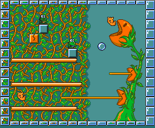
Existen otros elementos en la pantalla que van a hacer tu tarea un poco más fácil (¿o tal vez más difícil?). Se trata de bloques de varios tipos: duros como piedras (que no podrás romper), otros que se har n pedazos cuando les lances una bola rodante (y que contendrán valiosos ITEM) e incluso bloques "reboteadores" (que nos negamos a explicar porque su nombre es suficientemente
descriptivo).
Como véis, es como Bubble Bobble, pero con algo más (porque seguro que record is que éste no tenía PLATAFORMAS DIAGONALES!!!).
Por supuesto (¿o qué creíais?) existir un tiempo límite (MUY LIMITADO) para "limpiar" cada fase. Además, al final de cada zona (10 fases) deberás acabar con un "Boss".
Sí, porque las ranitas
deberán cruzar 10 zonas para alcanzar su objetivo: liberar a la princesa LaLa
de las garras del malvado PokiPoki. Obviamente cada una de estas 10 zonas
tiene sus respectivos gráficos (muy coloristas) y con sus respectivos bichitos
(5 por zona) aparte del boss y un bichito especial que aparece cuando nos
enfrentamos al boss y que es el arma que utilizaremos para acabar con él a
bolazo limpio (los "slimes": ojo que también te pueden hacer la puñeta a ti).
Es decir, un total de 60 bichitos y 10 jefes de fase. No esta mal,
¨verdad?. Al igual que en el Bubble Bobble, el movimiento de los
bichitos es totalmente aleatorio, lo que le confiere al juego una mayor
dificultad, aparte de que no todos los bichitos tienen el mismo
comportamiento: unos andan por las plataformas, pero otros saltan
y...... otros vuelan, muchos disparan (veneno o disparos mortales) e incluso
otros tienen unos comportamientos muy peculiares, como el ninja (que
desaparece 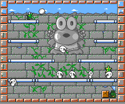
completamente, apareciendo en
otros lugares de la pantalla) ,otros inmóviles y por eso mismo bastante
peligrosos, etc.
¿Y
cómo puede una pobre ranita enfrentarse a taaaaaaantos peligros? Pues para eso
tiene los maravillosos items que se esconden detrás de cada bloque
rompible: pociones que alargar n tu lengua, o la harán más rápida, o que
te permitirán que cojas dos bichos al mismo tiempo (cuidado que esto es un
arma de doble filo), botas que te darán velocidad o que te permitirán rematar
a enemigos paralizados por una bola rodante, aparte de otros items que te
proporcionarán invulnerabilidad a las bolas rodantes, inmunidad total (durante
un tiempo limitado), multiplicarán tus puntos por 2, vidas o créditos extra,
pasos directos de fase o mundo, e incluso una poción de hielo que te permite
congelar a todo bicho viviente. Y más, más y más sorpresas....
Y bien, ¿qué os parece? Bueno, no hay mucho más que
contar. Ya sólo falta que podáis verlo. ¿Cuándo? Si no falla nada será
pronto...
LA IMPORTANCIA DE LOS BLOQUES QUE DELIMITAN LA PANTALLA
Este es uno de las aspectos que
más nos gustan de Puddleland: la originalidad de estos bloques no radica
sólamente en su diseño (¿cuántas veces habíais visto antes bloques
transparentes, eh?) sino también en su activa participación en el desarollo
del juego.... son los indicadores de
"TIME-LEFT" tras el aviso de HurryUp; además de que cuando eres
envenenado te indicar también cuánto falta para que puedas abrir de
nuevo la boquita (porque eso es lo que hace el veneno: te impide
disparar).
¿Y cómo
indican TANTAS cosas? Pues ya lo verás.
LOS PROTAGONISTAS DE LA HISTORIA
PokiPoki: Es "el malo". Imagina
que no existiera: pues entonces no habría historia que contar ni juego que
jugar... Pues bien, esta malvada rana (vergüenza de su especie) se ha
hecho con el control de los poderes de PuddleLand tras raptar a la princesa
Lala, causando así el Caos en esta
tranquila tierra (Caos para las ranas = SEQUIA).
LaLa: Princesa de PuddleLand, casi una
diosa por los poderes que ostenta (y que le han sido conferidos, como no, por
"línea materna en segundo grado").
¿Qué
poderes? Pues controla el clima de su país para procurar a sus
súbditos
una primavera perpetua.
GeroGero: Nuestro intrépido protagonista. El realmente no sabe nada de los "tejemanejes" de la nobleza. Vive tranquilamente en su granja hasta que deja de llover (qué tragedia!). Así que decide buscar la ciudad legendaria (PP -PuddleLand Palace-, capital del reino -PuddleLand-) para "pedir cuentas" a quien corresponda (antes de que se le pochen las mazorcas).
KuriKuri: El mejor amigo (y vecino) de GeroGero. Como no tiene nada mejor que hacer, decide acompañar y ayudar (o no) a su colega en la aventura (y si no os gusta la excusa, pensad que se trata de que se pueda jugar a dobles y no os quejéis más...).
Y nadie más, porque para qué
puñetas os vamos a hablar de TODA la gente del pueblo de Gero y Kuri (marujas,
viejos chochos y niños petardos en su mayoría) ó de la aburrida colección de
cortesanos de la princesa (empezando por su senil padre, que se cree que es un
sapo).
DOS RANAS Y UN DESTINO: EL LARGO CAMINO
Son 10 las zonas que tendrás
que atravesar: cada una de ellas está compuesta a su vez por 10 fases..... y
por si esto fuera poco, al final de cada zona te espera un "Boss" que
intentar que no pases a la
siguiente.
ZONA1: STONEFACE PRINCESS'
WALL.
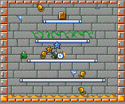
Para llegar a palacio deberás "escalar" la muralla que lo rodea. Te enfrentar s a gusanos, moscas, mariquitas y otras lindezas....
Al final encontrar s a la
mismísima Princesa Lala; bueno, una estatua de ésta que por supuesto está bajo
el control de PokiPoki (así que no es nada de
buena).
ZONA2: FROG'S FLESHEATING JUNGLE.
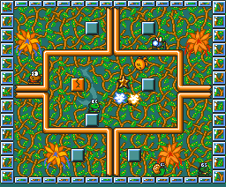
Ya has escalado la muralla. Ahora te introduces en "el jardín" de palacio, donde un montón de alimañas (serpientes, camaleones, caracoles salvajes...) saldrán al paso para "pedirte un autógrafo".
Cuando parezca que ya has
cruzado la jungla, aparecer el más peligroso de los vegetales conocidos:
La Planta Ranívora. Cuidado con sus
lenguas...
ZONA3: SQUID SOUP LAKE.
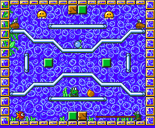
De la sartén al fuego: al pie del jardín hay un "pequeño estanque" en el que vas a parar irremediablemente. Medusas, almejas, erizos de mar, y hasta algún que otro pez te harán compañía durante 10 "tranquilas" fases.
Un pequeño e indefenso calamar
es el guardián del lago (no esperaban que nadie sobreviviera a la Planta
Ranívora). ¡Pero espera! No creemos que PokiPoki permita un enfrentamiento en
igualdad de condiciones....
ZONA4: BREADSTUFF MOUNTAIN
¡Uf! ahora te encuentras al pie de una
montaña. El palacio esta ARRIBA DEL TODO. Vaaaaale: subiremos. Los peculiares
habitantes de estas tierras (ninjas, cabras-muelle, pajaritos, conejitos e
incluso una indefinible bola rosa -?-) tampoco te lo pondrán muy
fácil...
Como postre te darán la
bienvenida 2 sofisticados vehículos surgidos de la retorcida mente de PokiPoki
y conducidos por algunos de los ineptos slimes que forman sus aguerridos
ejércitos: ¡cuidado, o te convertirás en hamburguesa de
rana!
ZONA5: PRETTY LITTLE CAVE MOON
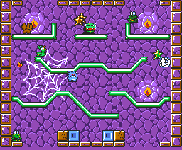
Como no hay manera de llegar arriba por vías normales, te vas a meter en una acogedora cueva, a ver si encuentras un camino alternativo.... Mala elección, ya que, aunque realmente es el camino apropiado, est todo custodiado por desalmadas bestias sedientas de sangre... (murciélagos, dragones, fuegos asesinos.... ¡ah! y también perritos y ositos de peluche).
A la salida de la cueva: una
araña sobrealimentada intentar darte las "buenas
noches".
ZONA6: BREAKFAST AT TIFFANY'S FOREST.
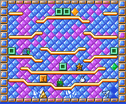
Vale: estamos en la otra ladera de la montaña y esto está lleno de cristalitos (esperemos que no te cortes...). ¡Qué sicodélico es todo! Cerditos mineros, repugnantes gotas de no-se-qué, triángulos metálicos descontrolados....
Como guardián de un bosque de
cristal, nada mejor que un diamante de 2 millones de
kilates.
ZONA7: KEYSKEEPER'S SWEET HOME.
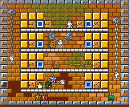
Por fin estamos dentro de palacio... pero hemos entrado por la "puerta de atrás". Las mazmorras están repletas de siniestros personajes: momias, esqueletos, fantasmas, demonios y hasta alguna armadura que no está tan vacía ni tan muerta como pueda parecer.
El carcelero nos aguarda al
final y no tiene buenas
intenciones.
ZONA8: POKIPOKI (WHAT-A-BAD-GUY)'S PALACE.
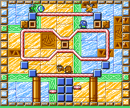
No ha tardado mucho el muy
ruin en hacerse con el bonito palacio y convertirlo en un antro donde habitan
sus más locas invenciones: teteras asesinas, cíclopes, armaduras
vivientes....
PokiPoki en persona nos espera
al final del trayecto (¡pero no lo hace sólo y desarmado, el muy
cobarde!).
ZONA9: "JUST LIKE HEAVEN".
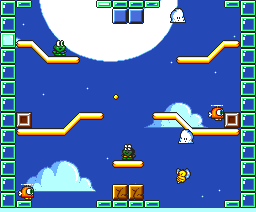
A través de las nubes, persiguiendo a PokiPoki, trataremos de llegar al centro de poder de PuddleLand. En nuestro camino: nubes, ingenios voladores, abejas con mala uva, y hasta un pingüino (¡¿es un pájaro, no?!).
Los genios habitantes de las
alturas (ONIS) supondrán la última barrera a franquear para llegar
a........
ZONA10: THE TOWER OF GEYSER
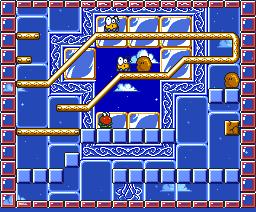
Centro de poder de PuddleLand y
origen de toda su magia. Extraños seres e ingenios creados o invocados
por el oscuro poder de PokiPoki suponen el último reto antes del
enfrentamiento final....
LOS ORGULLOSOS PADRES
| Nombre: | Smelly Cat |
| Nombre VERDADERO: | Minako Aino (Sailor Venus) |
| Su parte en PuddleLand: | Idea
principal, ideas secundarias, diseño de fases y en general complicarlo
todo para desesperación del pobre
programador. |
| Ocupación: | Gato (y esporádicamente, "guerrero que lucha por el Amor y la Justicia"). |
| Aficiones: | Manga & Anime, MSX, RPG's, Friends, el atún y los ovillos de lana. |
| Antecedentes: | En el mundillo del MSX nada digno de mención. |
| Proyectos: | Argumento de "Sir Dan", y después "ya veremos"... |
| Estado Mental: | FELIZ |
| Juego Favorito: | PuddleLand (!) |
| Frases más Usadas: | ¿Cuál es el tamaño máximo de un bicho para moverlo por la pantalla y cuántos bichos pequeños se pueden poner simultánemente? ¿Ysi usamos diagonales? ¿Qué hay del TRIPLE SCROLL que me prometísteis?.... |
| Nombre: | Sutchan |
| Nombre VERDADERO: | Simon Gallup |
| Su parte en PuddleLand: | Se ocupa de que las ideas del salvaje de arriba las pueda llevar a cabo el quejica de abajo ("pulidor"). ¡Ah! y también se encarga de hacer TOOOOOOODOS LOS GRAFICOS (diseño y realización). |
| Ocupación: | Está muy ocupado dando continuas excusas para no asistir a las reuniones de usuarios... |
| Aficiones: | Alphaville, MSX y sus RPG's, CLAMP, Heroic Fantasy & CI-FI. |
| Antecedentes: | Muchas horas de "ensayos" frente a la pantalla con el disco del Graphsaurus metido perpetuamente en la disquetera para ofreceros los gráficos más aceptables que es capaz de hacer (por ahora!). |
| Proyectos: | Entorno GRAFICO de "Sir Dan" y colaboración en "KPi Ball" |
| Estado Mental: | CONFUSO. |
| Juego Favorito: | PuddleLand (!) |
| Frases más Usadas: | "¡Esto es
una vergüenza, HAY QUE RETOCARLO!" "¡¡Pobre Manuel, Es un mártir!!" "Sigo aprendiendo! (a hacer gráficos, se entiende...)" |
| Nombre: | Manuel Pazos |
| Nombre VERDADERO: | Pazos, Manuel |
| Su parte en PuddleLand: | Aguantar a los dos de arriba, y, por supuesto, hacer el maravilloso PROGRAMA que hace que un montón de bichitos se muevan por la pantalla. También se encarga de los EFECTOS SONOROS. |
| Ocupación: | Sufrir los continuos maltratos psicológicos perpetrados por los "delincuentes mentales" arriba descritos. |
| Aficiones: | No le da tiempo a tener "de eso" |
| Antecedentes: | MUUUUUUUUUUUUUCHOS. Destacaremos: maravillosas traducciones de innaccesibles RPGs japoneses, continuas colaboraciones con "casi todo aquél que se lo pida con educación", el INCREIBLE "Sonyc", y un larguísimo etc. |
| Proyectos: | Co-programación de "KPi Ball" (¡junto a Super-Ramones! ), además de (suponemos) un millón de colaboraciones con todo el mundo.... ¡Ah! y matar del modo más sanguinolento posible a cierto par de... |
| Estado Mental: | AGOBIADO. |
| Juego Favorito: | PuddleLand (!) |
| Frases más Usadas: | "¡OS VOY A
MATAR!", "¿DONDE HABRE METIDO MI LATIGO?" "¡¡ESPERAD A QUE OS PILLE CARA A CARA!!" "¡MAMA, TRAEME MAS ASPIRINAS!". |
Bueno, es evidente que también habrá MÚSICO. El afortunado es: Hans Cnossen. Y como le conocéis de sobra, pues le hemos evitado esta humillación ("No, Manuel, tú no te escapas....").
INFO TECNICA
PuddleLand es un juego pensado y desarrollado para que funcione en cualquier MSX2 (o superior), con al menos 64Kb RAM y 128Kb VRAM. También soporta FM y MoonSound, y será instalable en disco duro.
Debido al número de personajes,
objetos y demás cosas que en ocasiones hay simultáneamente en pantalla, se
recomienda el uso de un turbo R (que simpático él).¡Esto no quiere decir que
el juego no sea PERFECTAMENTE jugable en un
MSX2!
COMO NACIO PuddleLand
""La idea de PuddleLand surgió
hace año y medio, en las Navidades del '96. Hacía poco tiempo que Sutchan
habia terminado los gráficos de cierto juego aún inconcluso (por cierto,
patéticos los puñeteros gráficos.....) y tenía ganas de hacer más cosas, así
que junto Smelly Cat, se pusieron a pensar en qué clase de juego les gustaría
hacer entonces. Resulta que estaban muy impresionados por "Blade Lords" de
Parallax: éstos juegos siempre les habían gustado mucho y en
MSX hay pocos ejemplos y no demasiado
brillantes... ""
Así que
ahí vamos nosotros, a comernos el mundo: pocos días después se ME ocurrió (soy
Smelly Cat) la idea de PuddleLand (ranas, lenguas, atrapar, bolas rodantes),
pero ahí estaba Sutchan diciendo que acababa de descubrir la pólvora: "Me
acabas de describir una estupenda fusión de Bubble Bobble, TumblePop y Snow
Bros...". Aún así, como la idea era buena aunque ya estuviera inventada
a trozos en juegos diferentes, decidimos seguir con ella. Así empezamos a
plantearnos más seriamente lo que sería PuddleLand: la longitud del juego
(realmente queríamos un juego largo, ya que Blade Lords se nos hizo demasiado
corto), como lo dividiríamos, temática de gráficos de fondo, división de
zonas, enemigos, bosses, etc... Cuando tuvimos realizada la primera zona
convencimos a un amigo que iba a una reunión para que le comentara nuestro
proyecto al insigne (aun no le conociamos) Manuel Pazos (realmente no nos
atrevíamos a escribirle; por aquél entonces estaba aún liado con el Sonyc y
nos parecía que se iba a reír de nosotros..).
Por cierto, gracias JAM por tu apoyo entonces y tu
incondicional y constante idem durante todo este tiempo (aunque no te
perdonamos que no nos hayas hecho las músicas...).
A lo que íbamos: a Manuel le
gustó el asunto (cosa que Sutchan no se acaba de explicar del todo, ya que no
para de decir que los primeros gráficos eran una kk). Y desde entonces hemos
trabajado en equipo, muy POQUITO A POQUITO (sin prisa pero sin pausa y en
"absoluto secreto"). Durante todo este
tiempo Manuel ha pasado a ser por derecho propio uno de los co-creadores,
por
la ingente cantidad de ideas y
modificaciones que ha propuesto y realizado. Han sido muchos los "episodios" y
"situaciones" que han surgido durante el proceso (casi "PARTO" -por lo del
sufrimiento-) creativo.
Y así llegamos al momento actual: todo está ya casi listo y boh.ken (o sea, nosotros) está orgullosa de presentaros su más querida (y única hasta el momento) creación.... PuddleLand.